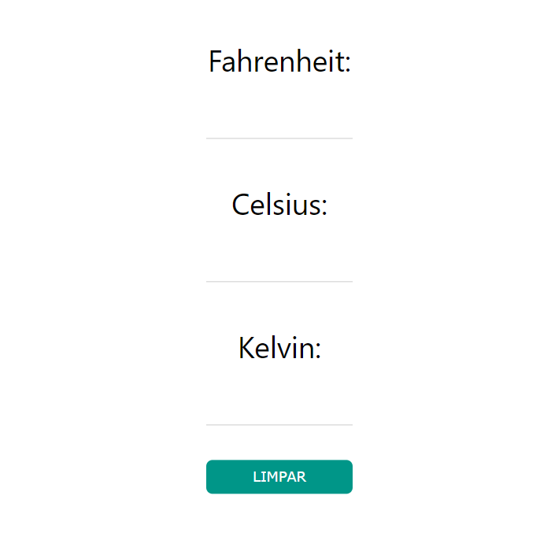

Este conversor calcula e converte as 3 escalas de temperatura: Celsius, Fahrenheit e Kelvin.
Para usar o conversor é só clicar no botão "CONVERSOR" no topo da página.
(Imagem representativa)
COMO USAR?
Após abrir a página do conversor clicando no botão "CONVERSOR" no topo da página, insira os dados em um
dos campos do conversor e ele automaticamente irá converter para todas as escalas de temperatura.